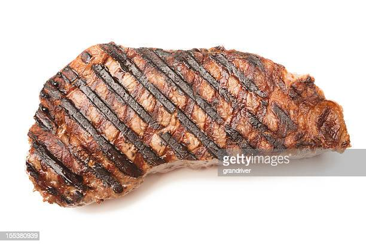

Medium-rare Steak Recipe

Cooking a medium rare steak isn't as hard as it seems; it just takes little practice and a handy meat thermometer.
Ingredients
- Your favorite cut of steak
- Salt & Pepper
- Butter
- Garlic Salt
After preparing your steak with marinade and whatever seasoning. You need to get your grill heated up to around 400 degrees. And your steak will be finished around 135 degrees for med-rare.
- Put steak on grill for 4 minutes
- After 4 minutes flip steak
- Check temp of steak with meat thermometer